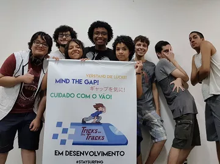

A Ink Bits surgiu como uma ideia de brincadeira no final de 2012 no momento do ensino médio no Rio de Janeiro, com Josias da Silva Júnior e Gabriel Rodrigues na internet no meio de toda a mudança de plataformas e facilidade de trabalho com jogos. Logo, nossa equipe cresceu, de duas pessoas, para três, e logo, éramos cinco e assim por diante. Tivemos um nome diferente deste que nos faz muito felizes por todas as experiências passadas. No entanto, estávamos apenas brincando, até que decidimos levar a brincadeira a sério. Criamos uma identidade e reformulamos tudo, das funções da equipe ao nome da empresa, que agora é conhecido como Ink Bits. Estamos em nosso primeiro ano e temos a noção de que agora é o ano de nossa virada no mercado de jogos independentes, brasileiros e internacionais.
Nós somos a Ink Bits e estamos aqui para revolucionar a Indústria dos jogos!
Para nós, desde que nos conhecemos no mundo do jogo, os jogos são obras-primas, obras de arte, quintessências de um gênero artístico. É a união de todos os bons elementos em um conteúdo exclusivo. Nosso foco é fornecer apenas isso, além de uma revolução interna e constante em nossos projetos, de forma única e com um objetivo: Promover a sua diversão .